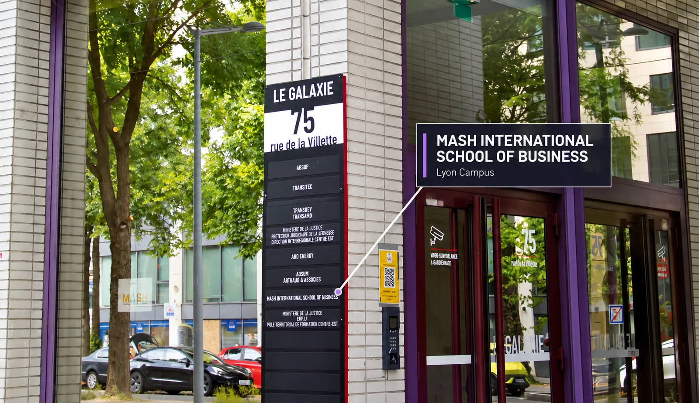
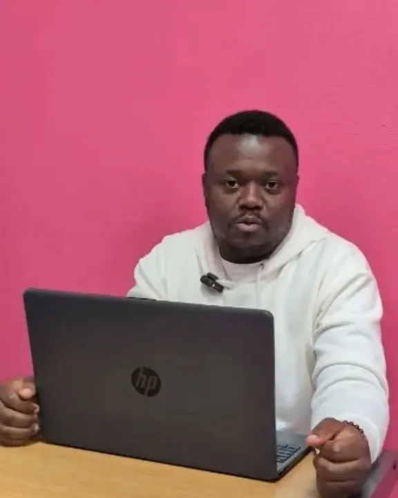

Paris · Student Services & FLE
145 Avenue de Flandre, 75019 Paris
Metro Line 7 (Crimée). Bus lines 45, 48, 54, and 60 stop near Avenue de Flandre. Gare du Nord via line 7 then 5 (10–15 min).
00Cover
Apply now
Prospectus · 2026 · Paris & Lyon
01 Two campuses
Mash International School of Business (MISB), with campuses in Paris and Lyon, embodies a contemporary vision of higher education as a forward-looking business school in France: modern, ambitious, and globally connected.
02 State-recognised titles
RNCP 38666 Level 6 Title — Issued by the Ministry of Labour, Full Employment and Integration. Qualiopi-certified and accredited by the Académie de Paris.
03 Work-study, paid
Alternance is a training system that combines periods at school or a training centre with periods in a company. The student is a full employee with a work contract and a salary.
04 Learning beyond the classroom
A key feature of student life at Mash International School of Business is the weekly Industry and Cultural Visit Program, held every Thursday. MISB professors accompany each visit.
Scroll to open the prospectus
01 — Campus life
Paris · Student Services & FLE
Metro Line 7 (Crimée). Bus lines 45, 48, 54, and 60 stop near Avenue de Flandre. Gare du Nord via line 7 then 5 (10–15 min).
Gallery · five albums, as published
Cultural learning is a core part of student life. Industry tours; city walks and cultural tours; festivals and live events.
Full gallery on misb.fr

Lyon · Executive & Work-Study Hub
Lyon Part-Dieu Campus — Part-Dieu TGV Station (Villette exit, 3 min). MISB Lyon welcomes students from over 60 nationalities.
Keep scrolling — the spread opens
02 — Programs
At MISB, we do not simply graduate students - we develop adaptable, innovative, and high-performing talents prepared to thrive in complex and international environments. For Students: Bac+3 to Bac+5 programs.
Bachelor RNCP · 4 Professional Specializations · RNCP 38666 Level 6 Title
Work-study · RNCP 38666
Annual tuition fees: €8,000 : fully covered through the apprenticeship funding system (no tuition fees paid directly by the student). Paris & Lyon · English/French · With AI tools. On misb.fr
BBS · Private Higher Education
France 1,900 € per year (years 1-3) · Europe excl. France Year 1 3,200 €, Years 2-3 1,900 € · Non-European Year 1 30 € application + 4,800 €, later years 1,900 €. Face-to-face 20-25 h/week; minimum age 18. On misb.fr
Mastère · Private diploma
International Business Management · Hotel and Tourism Management · Entrepreneurship and Startup Strategies · International Marketing · Human Resources Management · Luxury Brand Management.
France M1 and M2 1,900 € · Europe M1 3,200 €, M2 1,900 € · Non-European M1 30 € + 4,800 €, M2 30 € + 1,900 €. On misb.fr
DBA · Private academic title
Hotel & Tourism · Luxury Brand · Entrepreneurship and Startup Strategy · HRM · International Marketing · Business Intelligence and AI Strategy.
France 1,600 € per year · Europe year 1 3,200 € · Non-Europe year 1 30 € + 4,800 €, years 2-3 1,600 €. It does not fall under the French national university system. On misb.fr
FLE · French as a foreign language
4 weeks €300 · 8 weeks €540 · 12 weeks €810 · 24 weeks €1620 · 28 weeks €2100 · 36 weeks €2700. START SPEAKING FRENCH AT THE START OF THE SCHOOL YEAR! On misb.fr
Fees as published on misb.fr (15 Oct 2026). The site publishes different Bachelor RNCP fees per specialisation (€8 300 / €6 300 vs €5,100 / €4,700) without explanation; BBS, Mastère and DBA are private academic titles — "Although they do not fall within the French national university framework…" A €30 application fee must be paid in advance for international students.
03 — Work-study
One foot in school, one foot in the company. Train with no tuition fees: Training costs are covered by the company and its OPCO.
The 4 pillars of alternance
Apprenticeship contract: ages 16 to 29. Professionalisation contract: 16 to 25, and job seekers 26+.
Schedule, as published
Three rhythms are published on misb.fr for the same Bac+3 pathway; to be confirmed with the school before reuse.
Rights & duties
Rights. Appropriate remuneration according to your apprenticeship year; Paid leave like all employees; Complete social coverage and support.
Duties. Work actively; follow MISB training; respect company and school rules. Accident must be reported within 24 hours.
Representative: David BOUVIER — Paris 2nd Monday of the month 6-7 PM; Lyon last Thursday 6-7 PM. alternance-rights
Mobility
Study or intern at another institution, often abroad — academic exchanges from a few weeks to a full year; international internships.
Representative: Abby-Gaëlle CRUICKSHANK, adminlyon@misb.fr, +33 7 66 71 35 04 · 2nd Monday and last Thursday 6-7 PM. alternance-mobility
Contract termination
During the first 45 working days in the company, either party may terminate the contract unilaterally. Internal mediation (3 steps), then CCI external mediation.
Representative: Zakia DEBBABI, relation.entreprises@misb.fr, +33 7 77 18 38 10. alternance-rupture
Choose your alternance
we handle all the administrative steps: drafting the CERFA form, compiling the file and sending it to the OPCO.
Work-study on misb.fr04 — Career Center
The Enterprise Office of MISB supports each student in finding a company, signing apprenticeship contracts and entering the workforce. The Office also organises recruitment fairs, CV workshops, interview simulations and provides personalised follow-up for each apprentice.
Source: misb.fr/en/career-center, as published. The partner page shows "+3 companies" / "+5 years" for the same school; figures to be confirmed before reuse.
For companies · Become a partner
VSEs · SMEs · Large companies. 3 exclusive benefits: Relationship support (priority matching of CVs), Increased presence (talks and presentations), Additional involvement (thesis presentation juries). 1 active Business Club.
Relations entreprises & Suivi de l'alternance — relation.entreprises@misb.fr · +33 7 77 18 38 10
Become a partnerFor tutors · Apprenticeship supervisor
100% centralised follow-up with Halfonse · 24/7 platform access · 1 free training dedicated to supervisors · 3 practical guides available.
Company assistance: CERFA drafting, OPCO submission, OPCO registration guidance.
Tutor a student05 — Student HUB
Student life
Cultural learning is a core part of student life. Industry tours; city walks and cultural tours; festivals and live events — every Thursday, with MISB professors. Lyon: cultural events, leadership workshops, career fairs, and networking opportunities; wellness programs, mentorship opportunities, and student clubs.
Student lifeStudent support
Our Student Help Desk is dedicated to ensuring you have the resources you need to succeed and feel welcome.
Accommodation
Find Your Student Accommodation in Paris or Lyon — begin your housing search as early as possible, ideally as soon as your admission is confirmed.
Providers listed: Studapart · Fac Habitat · Safehouse · CROUS Paris · Leboncoin · Ecla · ALJT · SeLoger
studenthouseDiversity, inclusion & wellbeing
At Mash International School of Business, diversity is not just a value — it is a strength. 0 tolerance for discrimination · 6 Charter commitments · 4,500+ Diversity Charter signatories · Feb. 2024 date of signing.
Campus 100% accessible for people with reduced mobility; Disability Referent: Mr. Pascal MALLEN.
student-diversityWhat Student's Say [sic] · Paris - MISB Student
I've been learning French here for 1 year and it's going great. I was not able to talk a year ago but now I speak well enough to have a conversation. My professor, Siham, is very kind and friendly. It's really fun learning with her.

It's an amazing environment to be in. I love it here.

I love the support & standard of learning. I love our Amiable Art & culture professor. I won't forget our french professor Mdm Lin... She makes learning french very easy.

Je recommande vivement à tous de faire cette expérience.
The staff are very accommodating, making education easy and less stressful. I really appreciate them.💯

MASH International School of Business brings diverse cultures together and teaches us how to be at our best in the world. Thank you, Mash International School of Business for the impact.
06 — Admissions
Application file · Individual interview · Admission outside of Parcoursup. Late entry possible up to 4 weeks after the start of training.
Apply at misb.fr. Complete the application form with your personal, academic, and program information. Upload the required documents (passport, diploma, CV, cover letter, etc.).
The Admissions Committee will review your application. If shortlisted, you will be contacted within 3–4 days to schedule a 15–20-minute interview via Google Meet
If admitted, you will receive detailed instructions. International students: The school will provide the necessary documents to support your student visa application. Attend the orientation session upon arrival in Paris or Lyon.
An application fee of €30 is charged for any admission application. This fee is non-refundable under any circumstances. The administrative fee of €300 is non-refundable in all cases. Intake dates: only "Spring / Autumn" is published.
07 — Contact
Paris · Student Services & FLE
145 Avenue de Flandre 75019 Paris+33 9 73 25 21 41 · WhatsApp +33 7 77 18 38 10
info@misb.fr
Lyon · Executive & Work-Study Hub
75 Rue de la Villette, 2ème étage, 69003 Lyon+33 4 58 28 44 62 · WhatsApp +33 7 51 55 00 86
infolyon@misb.fr
Mobile App: Google Play · App Store. Établissement d'enseignement supérieur privé.